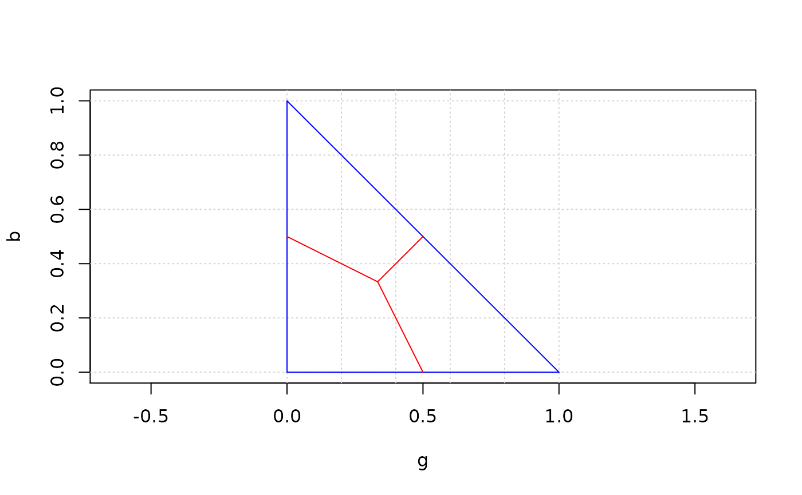
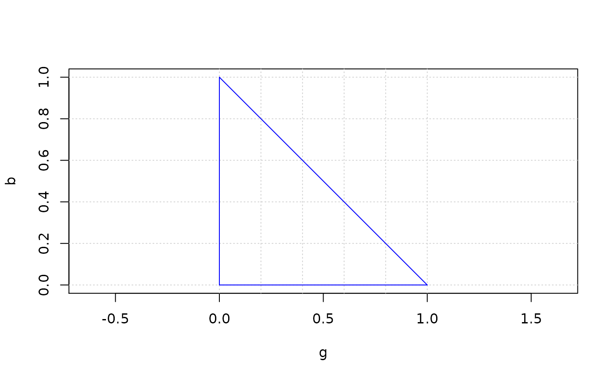
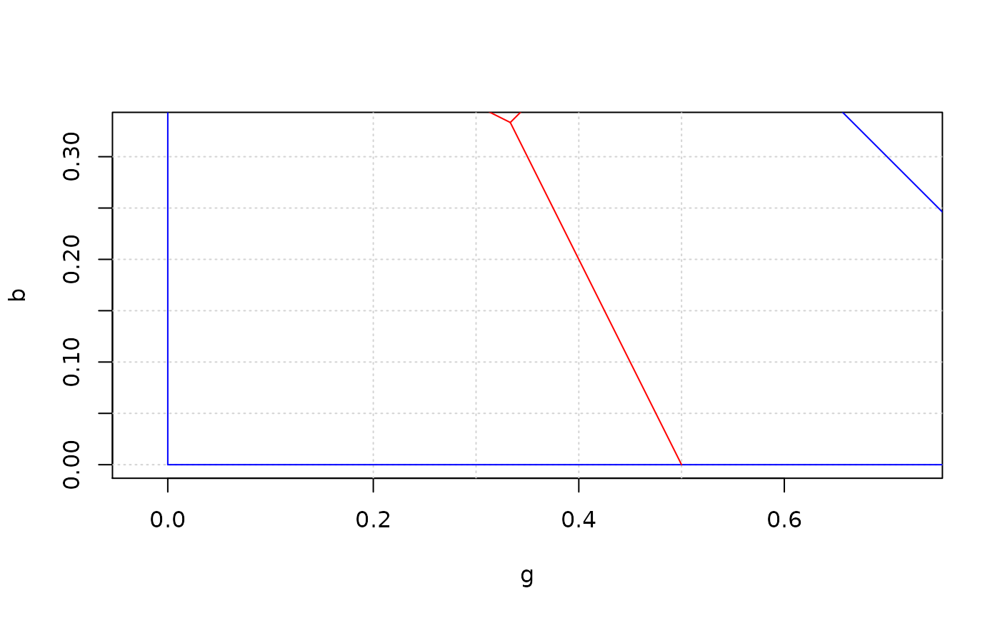

R/plot_rgb_plane.R
plot_rgb_plane.RdPlots a plane of the two variables selected by the user (r, g
or b) and, to serve as visual references, the lines limiting the
triangular area that can contain pixels (in blue) and the areas where one of
the colour variables has the larger proportion values (in red). Points
representing the pixels of a transformed image and lines representing the
rules can be later added to the plot using functions plot_pixels() and
plot_rule().
plot_rgb_plane( x_axis, y_axis, plot_limits = TRUE, plot_guides = TRUE, plot_grid = TRUE, ... )
| x_axis | a character string indicating which colour variable use as x. |
|---|---|
| y_axis | a character string indicating which colour variable use as y. |
| plot_limits | a logical value. When TRUE (default) the limits of the area where the pixels can be found are plotted. |
| plot_guides | a logical value. When TRUE (default) the limits of the area where one variable dominates are plotted. |
| plot_grid | a logical value; if TRUE (default) a grid is added. |
| ... | allows passing graphical parameters to the plotting functions. |
The function does not return any value.
Graphical parameters can be passed to the function to modify the
appearance of the plot. Intended for passing xlim and ylim
values to plot the part of the graph where the points are concentrated.
Because the variables were transformed into proportions, the pixel are
always inside the triangle defined by the points (0, 0), (1, 0), (0,
1). This triangle is plotted in blue. The point where all three variables
have the same value is (1/3, 1/3). The lines joining this point with
the centers of the triangle sides divide the areas where one of the three
variables has higher proportions than the other two. These lines are
plotted as visual aids, so they can be deleted at will.
# Simplest call plot_rgb_plane("g", "b")# Plane without the red lines plot_rgb_plane("g", "b", plot_guides = FALSE)# Restricting the plane area to show plot_rgb_plane("g", "b", xlim = c(0.2, 0.5), ylim = c(0.0, 0.33))